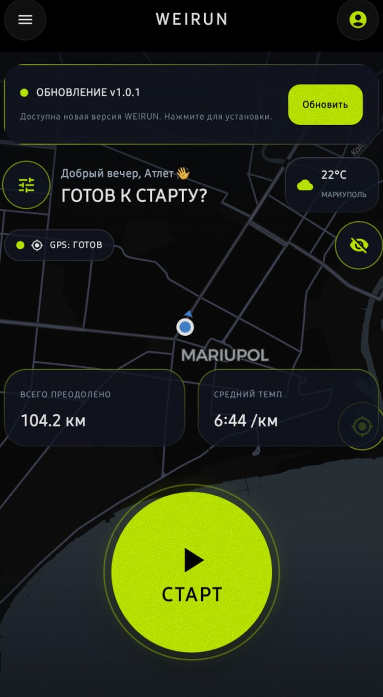
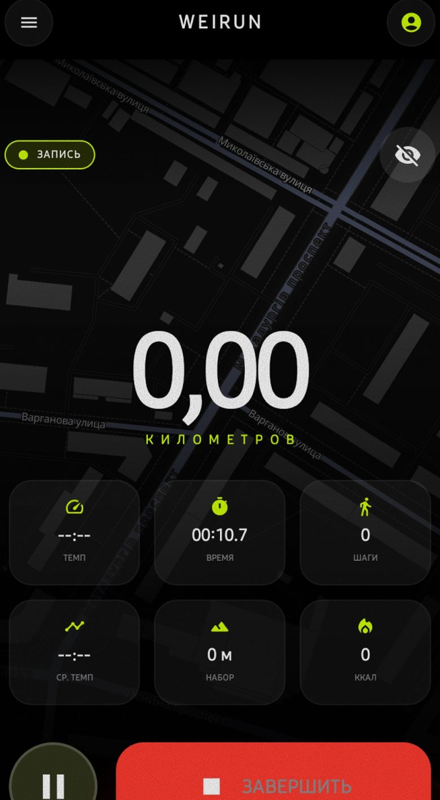
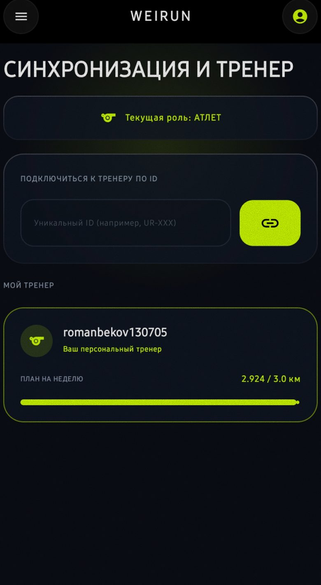
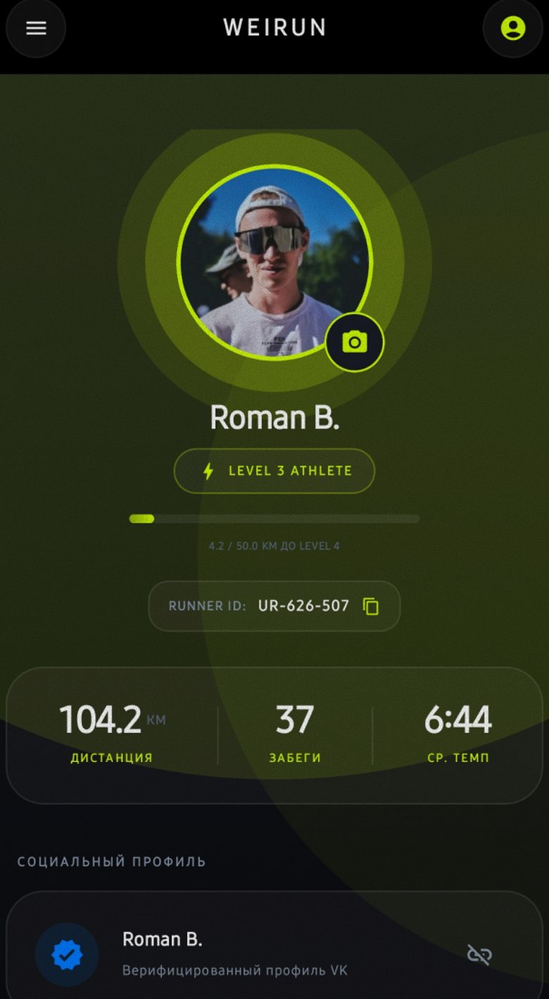
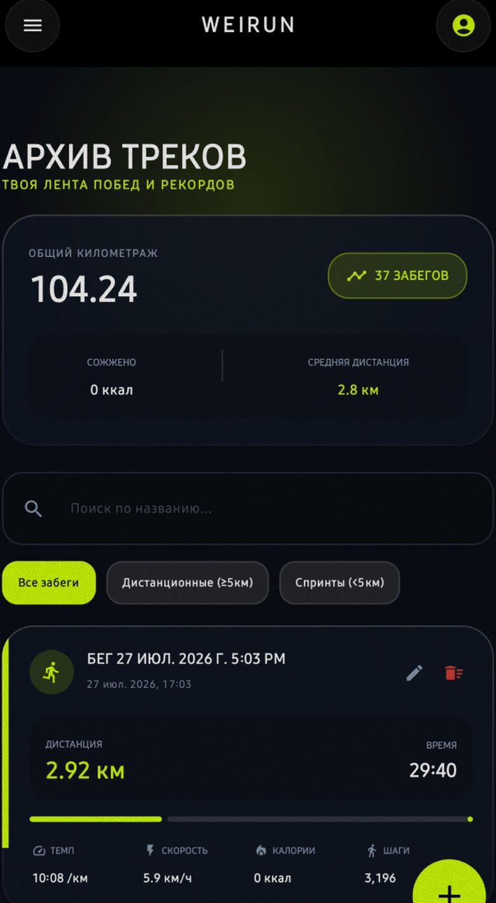
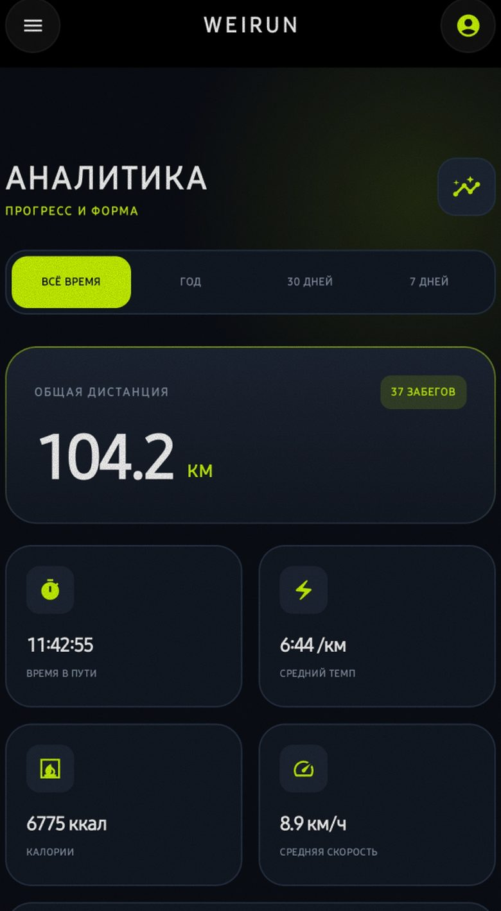
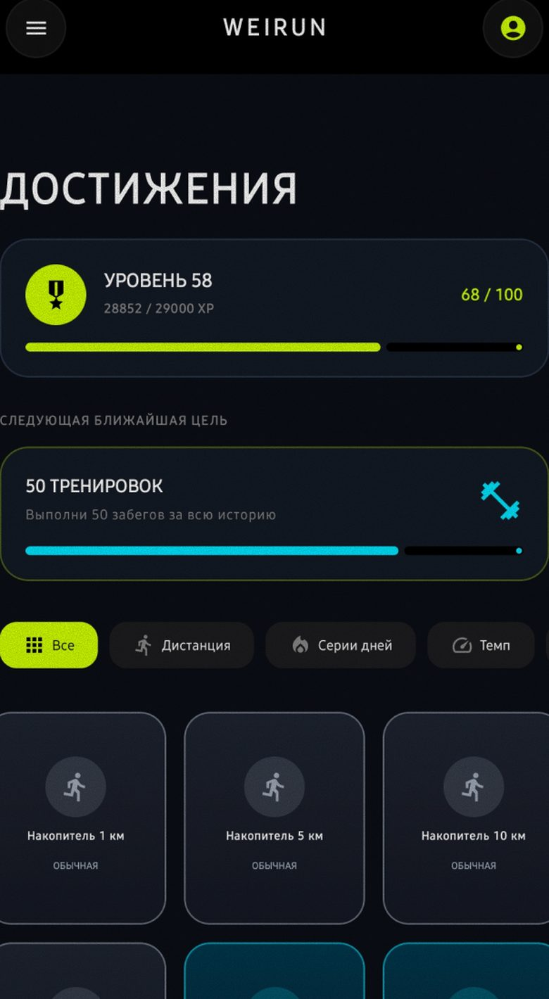

GPS-трекер
Карта, готовность спутников и старт одной кнопкой. Пишет маршрут в любых условиях.
Победы начинаются с тебя
Современный и быстрый трекер
для бега
GPS-трекер, живая статистика, тренерские планы, архив забегов и до 100 достижений — в одном тёмном, быстром приложении.
Прямая загрузка APK. RuStore и AppGallery — в день релиза.

Возможности
Карта, готовность спутников и старт одной кнопкой. Пишет маршрут в любых условиях.
Темп, время, шаги, набор высоты и калории — на одном экране во время забега.
Подключение к тренеру по ID и недельные планы с прогрессом всегда под рукой.
Уровни, Runner ID, физические показатели и верифицированный социальный профиль.
Вся история забегов: поиск, фильтры по дистанции, темп, скорость и шаги.
Прогресс и форма за всё время, год, 30 и 7 дней — без лишнего шума.
Дистанция, серии дней, темп — цели разного уровня сложности и опыт за каждую.
Интерфейс
Тёмные стеклянные экраны, лаймовый акцент и шум — как в самом приложении.






Релиз
Победы начинаются с тебя. Прямая установка APK — без ожидания витрин. Магазины подключим в день запуска.
Скоро в магазинах приложений